Data analysis and surveillance
Survey-weighted analysis in SAS, mortality trends with Joinpoint, and work with BRFSS, CDC WONDER and DHIS2 data.
Fits roles like epidemiologist, health data analyst and surveillance analyst.
Public health data, research and programs
Graduating December 2026 · Open to full-time public health roles
I turn public health research and data into clear answers.
MPH candidate (4.0 GPA) with a graduate certificate in epidemiology and a BS in Public Health (3.9 GPA). At the Connecticut Department of Public Health I tracked stroke mortality trends with Joinpoint and modeled BRFSS survey data in SAS. I've also done field surveillance in Islamabad, designed community health interventions and advocated on Capitol Hill.
My summer 2026 analysis for the Connecticut Department of Public Health, redrawn so you can explore it. Switch the subtype to see why the state's rising stroke rate came down to one kind of stroke.
Ischemic stroke ICD-10 I63
Connecticut's rate stayed below the nation's every year, but it rose more than twice as fast. This is the finding the study is built on.
Deaths per 100,000 people, age-adjusted
| Series | 2018 | 2019 | 2020 | 2021 | 2022 | 2023 | 2024 |
|---|---|---|---|---|---|---|---|
| Ischemic stroke, Connecticut | 3.1 | 2.2 | 2.9 | 3.5 | 5.0 | 5.2 | 5.3 |
| Ischemic stroke, United States | 5.0 | 4.3 | 4.8 | 5.5 | 6.4 | 6.5 | 6.5 |
| Hemorrhagic stroke, Connecticut | 7.2 | 6.8 | 6.4 | 6.8 | 6.0 | 5.7 | 5.6 |
| Hemorrhagic stroke, United States | 8.7 | 8.5 | 8.6 | 9.0 | 8.4 | 8.1 | 7.8 |
| All cerebrovascular disease, Connecticut | 27.2 | 26.7 | 28.4 | 29.5 | 30.1 | 30.5 | 31.6 |
| All cerebrovascular disease, United States | 37.1 | 37.0 | 38.8 | 41.1 | 39.5 | 39.0 | 38.6 |
My work so far spans analysis, research, community programs and policy. Each area below links to something I have actually done.
Survey-weighted analysis in SAS, mortality trends with Joinpoint, and work with BRFSS, CDC WONDER and DHIS2 data.
Fits roles like epidemiologist, health data analyst and surveillance analyst.
A 120-person survey I designed, ran and defended; a case-cohort protocol; CITI training in human subjects research.
Fits roles like research assistant, research coordinator and clinical research coordinator.
Household fieldwork in Urdu, Punjabi and Hindi, intervention designs for hypertension and type 2 diabetes, and patient navigation at a community health event.
Hypertension posterAll projects
Fits roles like program coordinator, community health specialist and health educator.
Policy asks to three Connecticut congressional offices on Capitol Hill, and a seat on SOPHE's national Advocacy Committee.
Capitol Hill visitCharger Blog
Fits roles in health policy, advocacy and public health communication.
Washington, DC, October 2026
As the CT SOPHE Student Ambassador, nominated by Dr. Alvin Tran, I spent two days in advocacy training at the SOPHE Advocacy Summit, then met staff from three Connecticut congressional offices to ask for support for the public health workforce.
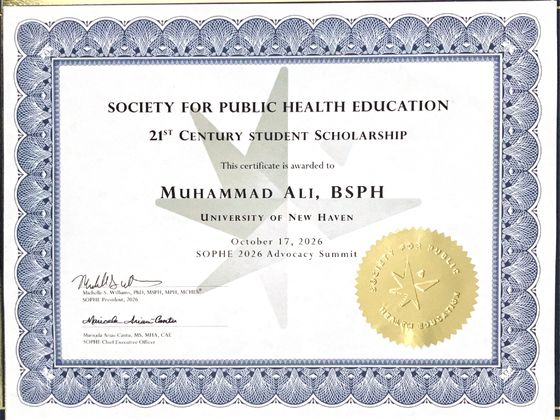
Connecticut Department of Public Health, spring 2026
Among 7,213 Connecticut adults, those earning under $25K had about twice the odds of reported heart disease as those earning $75K or more. The odds rose step by step as income fell.
Odds of reported heart disease by household income
Compared with adults earning $75K or more. Odds ratio with 95% confidence interval.
Undergraduate thesis, Bahria University, 2024
Three in four practitioners were willing to use telemedicine, and three in four scored low on knowledge of it. The barrier was knowledge, not willingness.
How: cross-sectional survey of 120 practitioners in Islamabad and Rawalpindi, built on the Technology Acceptance Model and analyzed in SPSS.
Share of respondents scoring 60% or higher
MPH coursework, Environmental Epidemiology, 2026
A policy brief and a case-cohort study protocol for rural Bangladesh. The protocol is a proposed design, not a completed study.
How: evidence synthesis from published cohort and meta-analytic studies, then a full analysis plan.
Protocol at a glance
Plain-language write-ups on LinkedIn: Stroke deaths in Connecticut Heart disease and the BRFSS Hypertension poster
Six years of public health work, in order. Open any step for the details.
Fieldwork and a first degree, 2020 to 2024
Part of the university's inaugural public health class. Graduated in July 2024 with a 3.9 GPA and a place on the Dean's Honors List.
Designed the questionnaire, surveyed 120 practitioners in Islamabad and Rawalpindi, analyzed it in SPSS, and defended it before a faculty committee with external examiners. Three in four were willing to use telemedicine; three in four scored low on knowledge of it.
Methods, state data and advocacy, 2025 to 2026
Master of Public Health with a Graduate Certificate in Epidemiology. GPA 4.0, finishing December 2026.
A solo intervention design for hypertensive men in Islamabad, built on the Theory of Planned Behavior: low-cost pedometers, community walking groups, and Friday sermons framing activity as caring for the body. LinkedIn post
Selected for a university working group that trains students, staff and faculty as health equity leaders and advocates. Completed CITI human subjects and research ethics training to access a lab health dataset.
Guided patients one-on-one through a free, one-day community health event, from registration through screenings, lab tests, behavioral health checks and nutrition counseling to checkout. Received a Certificate of Appreciation.
Attended as a student, with registration covered by the Connecticut State Office of Rural Health. Sessions covered the rural health workforce pipeline, misinformation response, preparedness, environmental health from brownfields to alpha-gal syndrome, and a Rural Health Transformation Program panel with state program leaders from five New England states. Met about 30 rural health leaders from across the region.
Looking for full-time, entry-level public health roles across analysis, research, programs and community health. Open to relocating anywhere in the U.S.
Each one tied to the work where I used it.
| Area | What I use | Where I used it |
|---|---|---|
| Epidemiology and surveillance | Age-adjusted mortality rates and direct standardization; Joinpoint annual percent change; ICD-10 cause-of-death groupings; BRFSS complex survey design and weighting | Stroke study and BRFSS study, Connecticut Department of Public Health |
| Statistical software | SAS (data step, PROC SURVEYFREQ, PROC SURVEYLOGISTIC); SPSS; Joinpoint; Excel; R for regression, chi-square, t-tests, ANOVA and ggplot2 (coursework level, still building) | SAS and Joinpoint at CTDPH, SPSS in my thesis, R in MPH coursework |
| Data sources | BRFSS; CDC WONDER Underlying Cause of Death; DHIS2; NHANES; Demographic and Health Surveys; County Health Rankings | BRFSS and CDC WONDER at CTDPH, DHIS2 at the National Institute of Health, the rest in coursework |
| Research practice | Cross-sectional survey design; case-cohort protocol design; scoping review; policy briefs; posters and briefings for agency staff | MPH and BSPH research, CTDPH presentations |
| Languages | English (fluent); Urdu and Punjabi (native); Hindi (proficient); elementary Arabic and German | Field interviews in Urdu, Punjabi and Hindi at the National Institute of Health, Islamabad |
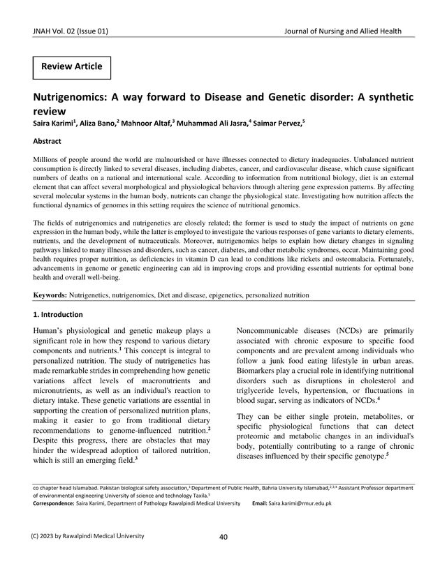
Review article, Journal of Nursing and Allied Health, Vol. 2, No. 1, March 2024
A narrative review of how nutrients change gene expression and how gene variants change the response to diet, with what that means for diabetes, cancer and cardiovascular disease. I publish as M. A. Jasra.
First page shown under the journal's CC BY-SA 4.0 license.
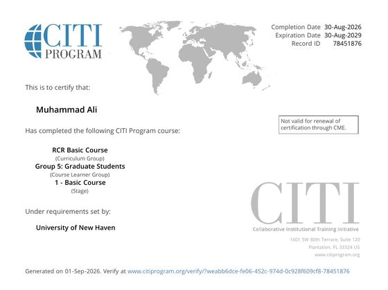
Responsible Conduct of Research CITI Program, Group 5: Graduate Students Aug 2026, valid to Aug 2029 Verify on CITI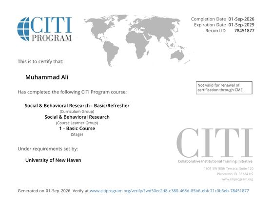
Social and Behavioral Research (human subjects) CITI Program Sep 2026, valid to Sep 2029 Verify on CITI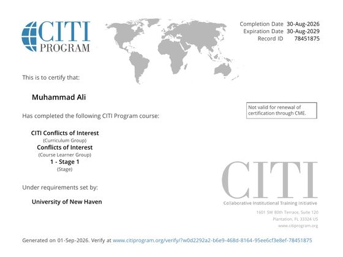
Conflicts of Interest CITI Program Aug 2026, valid to Aug 2029 Verify on CITI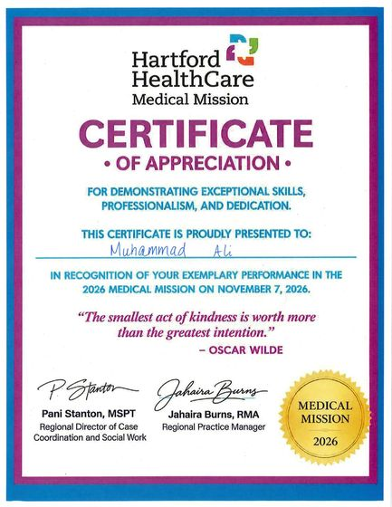
Medical Mission 2026, Certificate of Appreciation Hartford HealthCare Nov 2026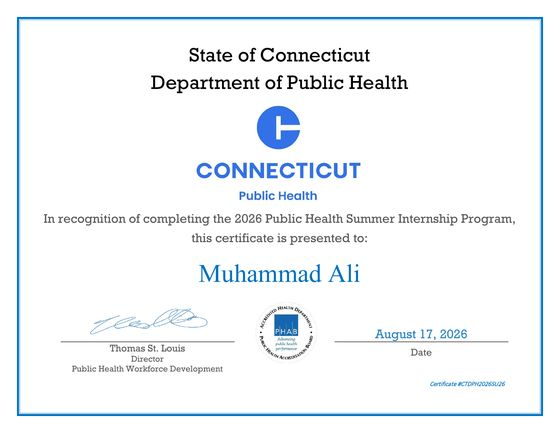
Public Health Summer Internship Program Connecticut Department of Public Health Aug 2026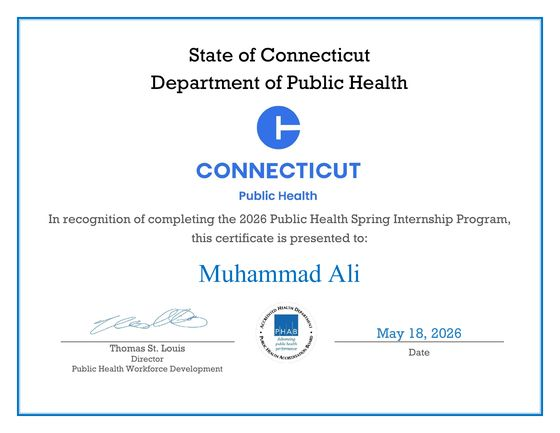
Public Health Spring Internship Program Connecticut Department of Public Health May 2026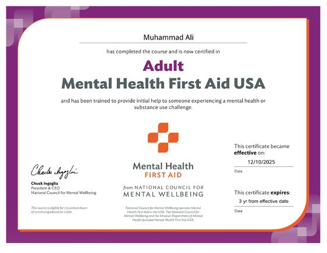
Adult Mental Health First Aid USA National Council for Mental Wellbeing Dec 2025, valid to Dec 2028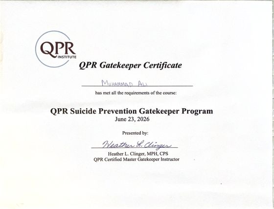
QPR Suicide Prevention Gatekeeper QPR Institute Jun 2026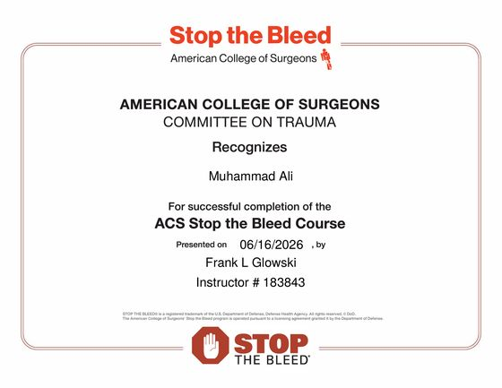
Stop the Bleed American College of Surgeons, Committee on Trauma Jun 2026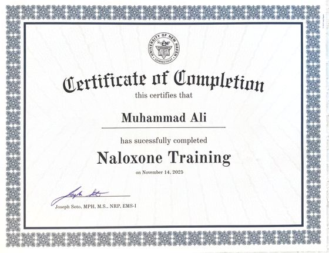
Naloxone Training University of New Haven Nov 2025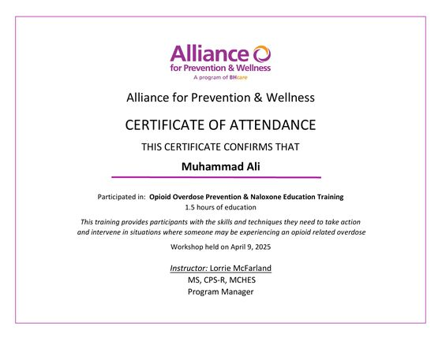
Opioid Overdose Prevention and Naloxone Education Alliance for Prevention & Wellness Apr 2025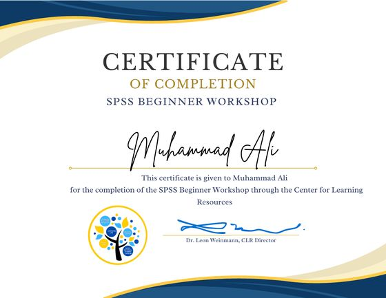
SPSS Beginner Workshop University of New Haven, Center for Learning Resources Certificate of completion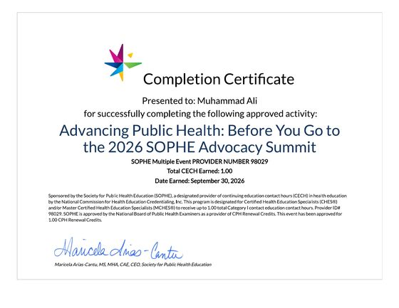
Before You Go to the 2026 SOPHE Advocacy Summit Society for Public Health Education, 1.0 CECH Sep 2026Select a certificate to see it full size.
I'm looking for full-time, entry-level public health roles starting after December 2026, in epidemiology and data analysis, research coordination, programs, community health or health education. I'm open to relocating anywhere in the U.S., and glad to hear from researchers and professionals across public health.
West Haven, Connecticut